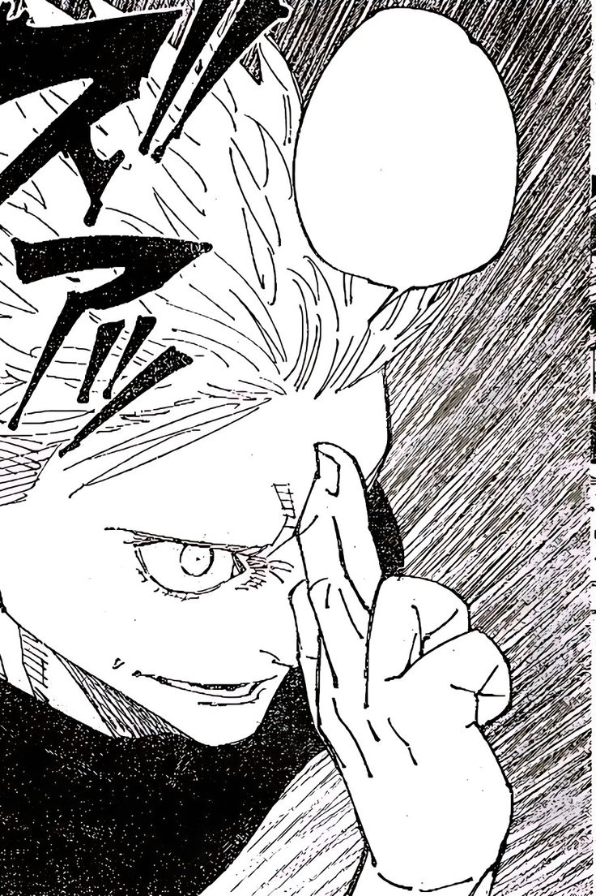

Jujutsu Kaisen
is a Japanese manga series written and illustrated by Gege Akutami. It has been serialized in Shueisha's shōnen manga magazine Weekly Shōnen Jump since March 2018, with its chapters collected and published in 24 tankōbon volumes as of October 2023.